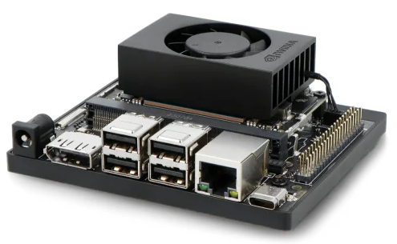
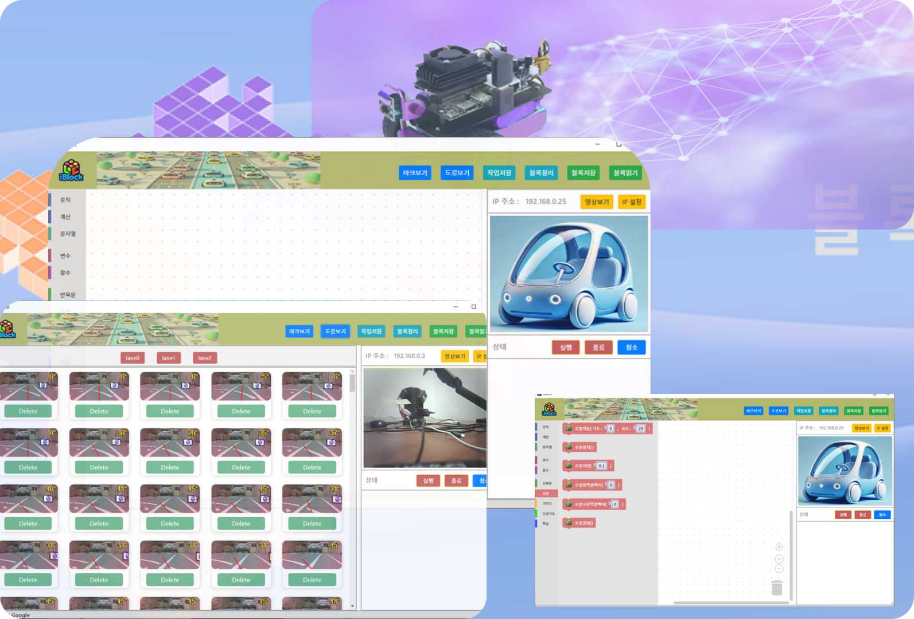

리눅스 커널 드라이브 실무 교육 (Jetson Orin Nano Super)


과정 개요
본 교육 과정은 NVIDIA의 차세대 엣지 AI 플랫폼인 Jetson Orin Nano를 활용하여 임베디드 리눅스 환경 전반을 체계적으로 학습하고, 실제 프로젝트에 적용할 수 있도록 설계되었습니다. Jetson Orin Nano는 강력한 GPU와 ARM 기반 CPU를 탑재하여 AI 추론, 컴퓨터 비전, 로보틱스 등 다양한 엣지 컴퓨팅 분야에 활용이 가능합니다.
본 과정을 통해 임베디드 시스템 부팅 구조, 드라이버, 디바이스 트리, 주변 장치 제어부터 딥러닝 기반 하드웨어 제어 까지 폭넓게 다루며, 실습 위주의 교육으로 즉시 적용 가능한 역량을 키울 수 있습니다.
임베디드 분야가 고도화되고, 엣지 디바이스에서 AI 추론과 컴퓨터 비전 수요가 급증함에 따라, Jetson Orin Nano는 뛰어난 성능과 유연성을 갖춘 솔루션입니다. 본 교육을 통해 참여자들은 Jetson Orin Nano를 중심으로 임베디드 리눅스 개발 전 과정을 학습하고, AI 및 컴퓨터 비전 프로젝트를 직접 구현해볼 수 있습니다. 이를 통해 현업에서 요구되는 엣지 컴퓨팅 전문 지식과 실무 능력을 단기간에 확보할 수 있을 것입니다.
기대 효과
- 임베디드 리눅스 실무 역량: Jetson Orin Nano를 통해 시스템 부팅, 디바이스 드라이버, 성능 튜닝에 대한 통합 이해
- AI 가속 적용 능력: 인공지능을 학습 기능을 활용한 이미지 처리, 영상 인식, 추론 시스템 구현 역량 확보 및 시스템 제어
- 다양한 프로젝트 응용: 로보틱스, 자율주행, IoT 등 현업 프로젝트에 즉시 적용 가능한 전문 기술 습득
교육목차
1. 임베디드 리눅스 개요
1) 리눅스 기본 구조
- 커널 영역과 사용자 영역
- 파일 목록 구성 시스템
- UNIX 계정관리, 디렉토리 관리, 파일권한 계요
- 커널(Kernel), 쉘(Shell), 파일 시스템(File System) 개념
- 프로세스/쓰레드 개념 및 리소스 관리
2) 리눅스의 시스템 프로그램밍 - UNIX 시스템 프로그래밍 - IPC, 네트워크 프로그래밍 - 파일 입출력 프로그래밍
3) 리눅스 쉘 프로그래밍 역활 - 기초 명령 - 쉘 프로그램 →
2. Jetson Orin Nano 개발 환경 구성
-
개발 툴 및 요구 사양
- Jetson Orin Nano 소개
- Ubuntu 호스트 PC 준비
- NVIDIA SDK Manager 설치 및 사용법
- JetPack SDK 개요
- 개발 환경 설정 (SDK Manager 설치, JetPack 다운로드 및 설치)
- 리눅스 커널 소개 및 임베디드 시스템에서의 역할
-
Jetson Orin Nano 초기 세팅
- JetPack(리눅스 BSP) 다운로드 및 설치
- 부트 모드 설정 및 플래싱(Flash) 절차
- 네트워크 설정, SSH 접속 등 기본 환경 구성
3. Jetson Linux 플랫폼 심층 이해
- 커널 구조 및 구성 요소
- 모듈(Module) 및 드라이버
- Device Tree의 개념 및 편집 방법
- 동작방식 이해
- 루트 파일 시스템 구성
- 프로세스 관리, 메모리 관리, 파일 시스템
- 기본 디렉토리 구조 및 역할
- BusyBox, systemd 등 임베디드 환경에서의 서비스 관리
- 부트 로더(Bootloader) 이해
- U-Boot, cboot 등 Jetson에서의 부트 로더 역할
- 부트 시퀀스 분석 및 수정 방법
5. 크로스 컴파일 환경 설정
- 크로스 컴파일 툴체인 설치
- 커널 소스 코드 다운로드 및 설정
- 크로스 컴파일을 위한 환경 변수 설정
6. 리눅스 커널 빌드 및 설치
- 커널 설정 (make menuconfig, make xconfig)
- 커널 빌드 (make)
- 빌드된 커널 및 모듈 설치 (make modules_install, make install)
- Jetson SDK Manager 를 이용한 이미지 업데이트
7. 부트로더 및 커널 이미지 업데이트
- C-Boot 설정 및 동작
- 커널 이미지 및 Device Tree Blob (DTB) 업데이트
- 부팅 과정 이해 및 커널 로그 분석
8. 디바이스 하드웨어 제어 개요
- 드라이브 모듈 제작
- DTB 적용
- DTB 읽시
- pinmux
- H/W 제어
- 모듈을 이용한 하드웨어 테스트
9. 디바이스 드라이버 개발
- 디바이스 드라이버 기본 개념
- 문자 디바이스 드라이버 작성
- proc File System
- 디바이스 트리 (Device Tree) 이해 및 작성
- 상세 내용: Chapter 1: An Introduction to Device Drivers Chapter 2: Building and Running Modules Chapter 3: Char Drivers Chapter 4: Debugging Techniques Chapter 5: Enhanced Char Driver Operations Chapter 6: Flow of Time Chapter 7: Getting Hold of Memory Chapter 8: Hardware Management Chapter 9: Interrupt Handling Chapter 10: Judicious Use of Data Types Chapter 11: kmod and Advanced Modularization Chapter 12: Loading Block Drivers Chapter 13: mmap and DMA Chapter 14: Network Drivers Chapter 15: Overview of Peripheral Buses Chapter 16: Physical Layout of the Kernel Source
10. GPIO, I2C, SPI, UART 등 주변 장치 사용
- GPIO 제어
- GPIO 번호 매핑, sysfs를 통한 제어 방법
- LibGPIOD 등 새로운 인터페이스 소개
- I2C, SPI, UART 프로그래밍
- Device Tree에서 각 인터페이스 활성화/설정
- C/C++ 또는 Python 기반 주변 장치 제어 예제
- PWM, ADC, CAN 등 기타 인터페이스
- Orin Nano에서 지원하는 추가 인터페이스 사용법
- 센서 연결, 간단한 프로젝트 예시
- 드라이브 유형분석
- Misc 디바이스 드라이버
- UART 구조와 디바이스 드라이버
- Input 디바이스 구조와 드라이버
- Keypad Input 디바이스 구조와 드라이버
- Touch 디바이스 구조와 드라이버
- LCD 디바이스 구조와 드라이버
11. 디버깅 및 성능 분석
- 커널 디버깅 도구 (gdb, kgdb)
- 시스템 로그 분석 (dmesg, /var/log)
- 성능 분석 도구 (perf, ftrace)
12. 고급 주제 및 프로젝트
- 커널 보안 및 보안 패치 적용
- 커널 모듈 동적 로드 및 언로드
- 실습 프로젝트: 커스텀 디바이스 드라이버 개발 및 통합
11. 정리 및 Q&A
- 교육 내용 정리
- 질문 및 답변 시간
- 추가 학습 자료 및 참고 문서 안내